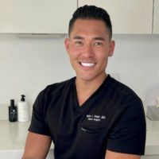

Dr Walter Joseph, MD Board Eligible Plastic Surgeon 90210
Name: Walter Joseph, MD
Last name: Joseph
Gender: male
Primary Specialty: Board Eligible Plastic Surgeon
Website: https://leifrogersmd.com/about-dr-walter-j-joseph-md/
Address: 9735 Wilshire Blvd.
Address suite: Penthouse Ste.
Phone: (310) 496-3744
International phone number: +13104963744
City: Beverly Hills
State: California
Zip Code: 90210
Country: US
Statement: Hello! Thank you so much for visiting my profile! My name is Dr. Walter Joseph and I am a board-eligible, Fellowship-trained Plastic Surgeon, based in Beverly Hills and Pasadena, Los Angeles, CA. I completed my Plastic Surgery training at the University of Pittsburgh, which has been ranked among the Top 2 Plastic Surgery training programs in the country for the last 2 years, and also completed an Aesthetic Plastic Surgery Fellowship at MarinaRox Plastic Surgery in Los Angeles, CA, which is consistently regarded as one of the best fellowships in the country. I have a particular interest in aesthetic plastic surgery of the face, breast, and body, as well as revision aesthetic procedures. I also enjoy reconstructive surgeries of the face and breast. At my practice, we offer luxury, concierge-style surgical and nonsurgical procedures that are patient-centered and fully personalized. I am a detail-oriented perfectionist as well as an artist and am committed to delivering only the most superior results for my patients, in addition to the highest quality patient care! I can’t wait to meet you!
Consulting Fees: 250$
Consultation note: $250 consultation fee, applies toward surgery
Has Sponsored Offer : No
Clinical Privileges:
- Illuma Surgery Center, Beverly Hills, CA
Education:
- Undergraduate: Bachelor of Science – Lehigh University
- Medical: Doctor of Medicine – Rutgers, Robert Wood Johnson Medical School
Postdoc Training:
- Residency: Integrated Plastic Surgery, University of Pittsburgh Medical Center
- Fellowship: USC-MarinaRox Aesthetic Plastic Surgery Fellowship
- Board Eligible: American Board of Plastic Surgery
GPS coordinates on map: 34.067271,-118.4075707

Walter Joseph, MD
Primary location:
Location name: Beverly Hills
State: CA
Country: US
Map point: 34.0752,-118.3990021
Treatments:
- Abdominal Etching
- African American Rhinoplasty
- Alarplasty
- AlloDerm
- Areola Reduction Surgery
- Arm Lift
- Asian Rhinoplasty
- Back Lift
- Bellafill
- Belly Button Surgery
- Body Lift
- BodyTite
- Botox
- Brazilian Butt Lift
- Brazilian Butt Lift Revision
- Breast Augmentation
- Breast Fat Transfer
- Breast Implant Removal
- Breast Implant Revision
- Breast Implants
- Breast Lift
- Breast Lift with Implants
- Breast Reconstruction
- Breast Reconstruction Revision
- Breast Reconstruction with Fat Transfer
- Breast Reconstruction with Latissimus Flap
- Breast Reduction
- Brow Bone Reduction
- Brow Lift
- Buccal Fat Removal
- Butt Implants
- Butt Lift
- Calf Implant
- Canthoplasty
- Capsular Contracture Treatment
- Cheek Augmentation
- Cheek Fillers
- Cheek Lift
- Chin Filler
- Chin Implant
- Chin Liposuction
- CO2 Laser
- Deep Plane Facelift
- Dermal Fillers
- Diastasis Recti Repair
- Double Eyelid Surgery
- Drainless Tummy Tuck
- Ear Surgery
- Earlobe Repair
- Eyelid Surgery
- Facelift
- Facelift Revision
- FaceTite
- Facial Fat Transfer
- Facial Feminization Surgery
- Facial Reconstructive Surgery
- Feminizing Top Surgery
- Forehead Reduction
- Genioplasty
- Gynecomastia Surgery
- Hand Rejuvenation
- Hip Augmentation
- Inverted Nipple Surgery
- Jaw Implants
- Jaw Reduction
- Kybella
- Labiaplasty
- Laser Resurfacing
- Laser Scar Removal
- Lip Fillers
- Lip Lift
- Lip Reduction
- Liposculpture
- Liposuction
- Liposuction Revision
- Liquid Facelift
- Lower Facelift
- Male Tummy Tuck
- Masculinizing Top Surgery
- Microneedling
- Microneedling RF
- Mini Facelift
- Mini Neck Lift
- Mini Tummy Tuck
- Mommy Makeover
- Monsplasty
- Morpheus8
- Motiva Breast Implants
- Neck Lift
- Nipple Reduction
- Nipple Surgery
- Nonsurgical Butt Lift
- Nonsurgical Facelift
- Nonsurgical Neck Lift
- Nonsurgical Nose Job
- Panniculectomy
- Pec Implants
- PicoSure
- Power-Assisted Liposuction (PAL)
- Profound RF
- PRP for Hair Loss
- PRP Injections
- Radiesse
- Renuva
- Renuvion
- Renuvion for Facial Resurfacing
- Restylane
- Revision Rhinoplasty
- Rhinoplasty
- Rib Removal
- Scar Removal Surgery
- Sculptra Butt Lift
- Septoplasty
- Silicone Injection Removal
- Sinus Surgery
- Skin Rejuvenation
- Skin Tightening
- Tattoo Removal
- Transgender Body Contouring
- Transgender Facial Feminization Surgery
- Tuberous Breast Correction Surgery
- Tumescent Liposuction
- Tummy Tuck
- Tummy Tuck Revision
- Umbilical Hernia Repair
- Vaginal Rejuvenation
- Vaginoplasty
- Vampire Facial
- Vaser Liposuction
RealSelf Info
Awards:
- Alpha Omega Alpha Medical Honor Society
- Magna Cum Laude – Lehigh University
Rating: 5.0
Profile views: 610
Answer count: 10
Review count: 3
5 star count: 3
Total star count: 3
Star rating: 2.9365390298238
Photo count last three months: 10
Photo and answer count last three months: 10
Lead count last three months: 3
Profile created: Aug 26, 2022
Profile modified: Oct 1, 2023
Profile photo modified: Jul 14, 2023
Profile promotion: Yes
Profile inactive: No
Premier status: Profile Plus
Tier: Free-Unclaimed
RealCare Promise: No
Directory link: Board Eligible Plastic Surgeon
RealSelf’s PRO: Yes
Doctor Designation Start Time: Sep 2, 2022
Doctor Designation End Time: Jan 1, 2033
Locations
- Beverly Hills, CA, US. GPS coordinates: 34.0752,-118.3990021
Latest ratings of treatments
- Injectable Fillers (Jun 2023) – Overall rating: 5/5 (Wait times: 5/5, Doctor’s bedside manner: 5/5, Phone or email responsiveness: 5/5, Payment process: 5/5, Time spent with patient: 5/5, After care follow-up: 5/5, Staff professionalism & courtesy: 5/5, Answered questions: 5/5)
- Injectable Fillers (Jun 2023) – Overall rating: 5/5 (Wait times: 5/5, Doctor’s bedside manner: 5/5, Phone or email responsiveness: 5/5, Payment process: 5/5, Time spent with patient: 5/5, After care follow-up: 5/5, Staff professionalism & courtesy: 5/5, Answered questions: 5/5)
- Injectable Fillers (Jun 2023) – Overall rating: 5/5 (Wait times: 5/5, Doctor’s bedside manner: 5/5, Phone or email responsiveness: 5/5, Payment process: 5/5, Time spent with patient: 5/5, After care follow-up: 5/5, Staff professionalism & courtesy: 5/5, Answered questions: 5/5)
- Botox (Aug 2022) – Overall rating: 5/5
- Botox (Aug 2022) – Overall rating: 5/5
- Rhinoplasty (Oct 2022) – Overall rating: 5/5
- Rhinoplasty (Oct 2022) – Overall rating: 5/5
- Botox (Aug 2022) – Overall rating: 5/5
- Rhinoplasty (Oct 2022) – Overall rating: 5/5
- Rhinoplasty (Oct 2022) – Overall rating: 5/5
Doctor’s answers
Question
Answer Header & Date
Answer Snippet
Main concern is dorsal hump & function – are my goals realistic?
Realistic goals
Nov 1, 2022
Nov 1, 2022
Hi alcg2017! Dr. Walter Joseph here from Beverly Hills, CA! Based on your photos, I think your goals are certainly realistic! A dorsal reduction can be performed (i.e. removing the “bump”), while still maintaining a straight bridge WITHOUT a ski sloped or scooped appearance. As for your tip, it would totally be up to you as to if you want any tip work done whatsoever. Some patients choose to preserve their tip while only addressing the dorsal hump, which is both reasonable and achievable! I…
Am I a good candidate for rhinoplasty to remove bump and nostrils?
Candidate for rhinoplasty
Nov 1, 2022
Nov 1, 2022
Hi Chlo98! Thanks for your question. At least from your photos, you are certainly a candidate for rhinoplasty. A surgical rhinoplasty would be able to lower your dorsum (remove the bump) and also de-rotate and de-project the tip of the nose so that your nostrils show less on both the front and side views. Also, with cartilage grafting and special maneuvers like an alar base excision (Weir excision), the nostril size can be decreased further and the ala can be better supported.
Bruising…
Bruising…
Is there any procedure to decrease the alar crease prominence?
Alar crease prominence
Nov 1, 2022
Nov 1, 2022
Hi SpiceMix! Thanks for your question. Dr. Walter Joseph here from sunny Beverly Hills, CA! As we age, we lose bone density and develop some soft tissue atrophy in what’s called the “pyriform” area of the nose, which is the structure deep to the alar crease that you’re describing. Also, some people (regardless of age!) have a genetically deeper set pyriform than others, which can also make the alar crease more pronounced. A nice treatment for this is to inject a thicker hyaluronic acid…
Rhinoplasty 6 months ago & it left a dent in my nostril – will it heal?
Dent in nostril
Nov 1, 2022
Nov 1, 2022
Hello Cute7275! Dr. Walter Joseph here from Beverly Hills, CA. I hope you’re well. It appears that you likely had an open rhinoplasty, where an incision was made across the columella at the base of your nose. If there is any sort of step-off at the closure between the skin edges, a “notch” or “dent” can occur. Sometimes, these scars can remodel and any irregularities can improve/resolve over the course of 1 year, however, if there is still an indentation at the 12 month point, I would…
Rhinoplasty recovery – bromelain/arnica & red light therapy?
Recovery after Rhinoplasty
Nov 1, 2022
Nov 1, 2022
Hi Malo10! Dr. Walter Joseph here from Beverly Hills, CA. I hope you’re well! For my patients, I typically recommend starting both Arnica and Bromelain 1 week prior to surgery. I then recommend that they continue the combination for at least 2 weeks post-op (a total of 3 weeks). As for red light therapy, you can actually begin red light therapy a day or 2 before your surgery, and then continue daily for as long as convenient. There is good data that red light therapy can decrease pain,…
How difficult is to correct alar groove/collapse?
Alar to tip transition
Oct 26, 2022
Oct 26, 2022
Hi Lipslikesugar! Dr. Walter Joseph here from Beverly Hills, CA. From what I can see in the photos, after your rhinoplasty, you were left with a very distinct demarcation between your ala and your tip. This can be fixed using cartilage grafts to smoothen that transition between your ala and your tip. By securing cartilage grafts from your tip complex and having those grafts articulate with your lower lateral cartilages and then having those same grafts extend laterally into the alar rims, it…
Can I restore my damaged nose to a normal and natural, in my opinion, state?
Revision septorhinoplasty
Oct 26, 2022
Oct 26, 2022
Hi Morgiana! I think it is very realistic to improve the appearance of your nose to a more “natural” state that is proportioned and balanced to your face a bit better. This would likely require an open approach (incision across the columella) and cartilage grafting. Depending on how much cartilage your previous surgeon took from your septum at the time of your initial surgery, you may need ADDITIONAL cartilage (either from a cadaver or from your own rib).
Latest Before And After Photos
- Doctor Walter Joseph, MD, Beverly Hills, California ( 90210) W4oman Treated With Neck Lift Pic
- Doctor Walter Joseph, MD, Beverly Hills, California W4oman Treated With Deep Plane Rhytidectomy Surgery Results
- Doctor Walter Joseph, MD, Beverly Hills, California W4oman Treated With Neck Lift
Last updated on 12/03/2023